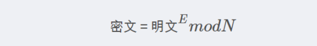
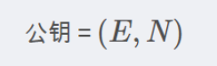
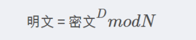
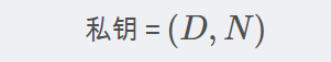

RSA 算法
[toc]
加密过程


解密过程


N = p * q
欧拉函数 f(n) = (p-1) (q-1)
公钥e, 1<e<f(n), 整数, e 与 f(n) 互质
私钥d, ed除以f(n)余数为1
安全性:
-
传递数据为: 大数n, 公钥e, 明文c
-
解密: 获得大数n, 私钥d, 明文c
因为解密方拥有私钥,所以可以明文c 乘 d 次幂, 再除以大数n, 就可以得到明文m;
加密方只有大数n, 与欧拉函数互质的公钥e, 根据这两个参数不能分解出两个大数pq, 也不能进一步求得欧拉函数,再进一步求得私钥e.
-
关键点就是不能根据大数n 找到我这次加密使用得质数pq
求解私钥d公式:
d = (f(n) +1) / e = ((p-1)(q-1)+1)/e = ((p-1)(n/p-1)+1)/e
已知n, 求pq, 大数得质因数分解, 21 很容易分解成3*7,但是超大的数就很难找到了.
比如RSA2048, 就是2048位 二进制大数的质因数分解.
一些应用:
-
保证信息传递安全: 公钥加密,私钥解密;
-
防止伪造,篡改(不能抵赖): 私钥来签名,公钥(证书)来验证
-
签名流程: 明文信息 --> 哈希函数 --> 摘要digest --> private key --> signature
-
签名验证流程: signature --> certificate (public key) --> digest-1 --> 明文信息 --> 哈希函数(证书中指定的算法) --> digest-2 --> 两个结果比较compare
https://blog.csdn.net/a745233700/article/details/102341542